Citizen Science on Mars — and the Surface Coverage of Dark Regolith on the Seasonal South Polar Ice Cap
Freie Universität Berlin
Planetary Sciences and Remote Sensing — Freie Universität Berlin
Freie Universität Berlin
University of Wisconsin–Madison
Deutsches Zentrum für Luft- und Raumfahrt (DLR)
Planetary Science Institute
Queen’s University Belfast
04 Jun 2026
Outline
- Citizen science — what it is, why it works
- Planet Four — mapping CO2-jet deposits on Mars with 40 000 volunteers
- Surface coverage — how much of the seasonal ice is darkened, and why it matters
- A cautionary tale — how an “inter-annual trend” turned out to be a sampling artifact
- Where we go next — a parallel albedo channel and an AI to scale it up
I · Citizen Science
What is citizen science, practically?
- Problem: a simple but arduous, repetitive task — too much data to go through yourself
- Solution: split the task into screen-sized subtasks
- Present the data through a simple workflow to thousands of untrained volunteers
- Aggregate many independent judgements into one reliable measurement
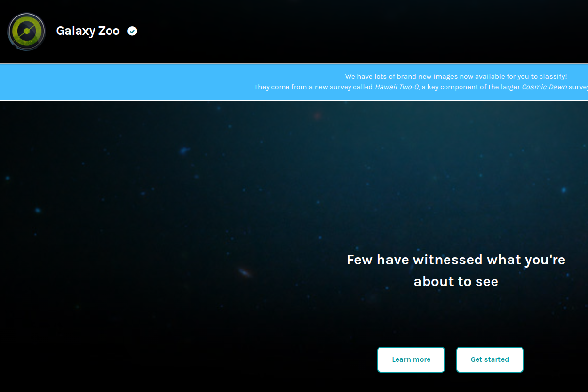
What’s in it for everyone?
For scientists
- Data volume grows exponentially — humans don’t scale
- Ideal for simple-but-arduous questions
- Labeled data is always better — CS is an efficient label factory for ML
- Genuine public-engagement opportunity
For citizens
- Participate in real research
- Independent of prior education
- A wide variety of fields now offer CS projects
- A core community forms around shared goals
Origins — Zooniverse & Galaxy Zoo
- Zooniverse took off with Galaxy Zoo (2007) — classify galaxy morphology
- Dozens of papers before planetary science even joined
- Galaxy shape distributions had to be redefined thanks to volunteer classifications
- The platform now hosts hundreds of projects across every discipline
II · Planet Four
Planet Four — citizen science on Mars
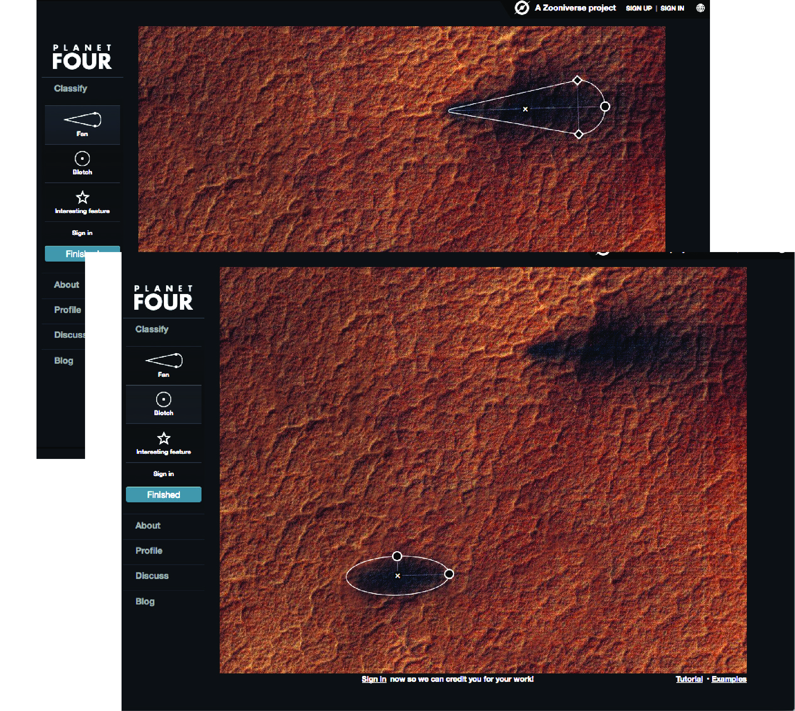
- Zooniverse-hosted volunteer mapping; 40 000+ classifiers
- Volunteers outline fans (directional CO2-jet deposits) and blotches (elliptical) on HiRISE south-polar tiles
- Six Mars Years (MY 28–33) — 469 obs · 64 494 tiles (Aye et al. 2019)
- Each tile seen by ≥ 30 independent volunteers before it counts
Science case — the Kieffer cold-jet model
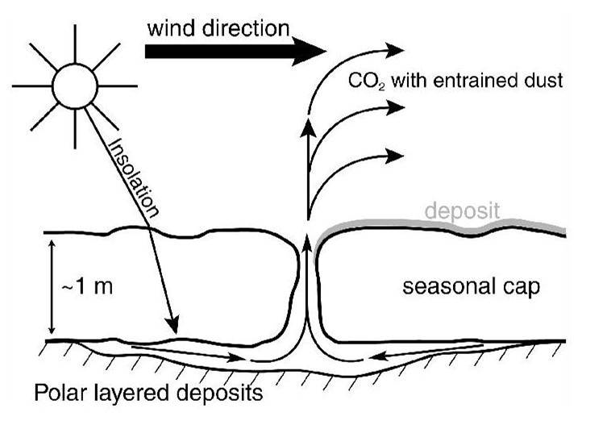
- Spring sublimation of translucent CO2 slab ice → high-pressure gas vents through cracks
- Subsurface regolith is ejected onto the bright seasonal ice as fan / blotch deposits
- Fan shape is aligned with the prevailing wind at the moment of eruption (Kieffer 2007; Portyankina et al. 2022)
What volunteers map → wind data
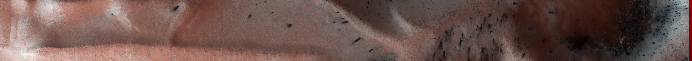
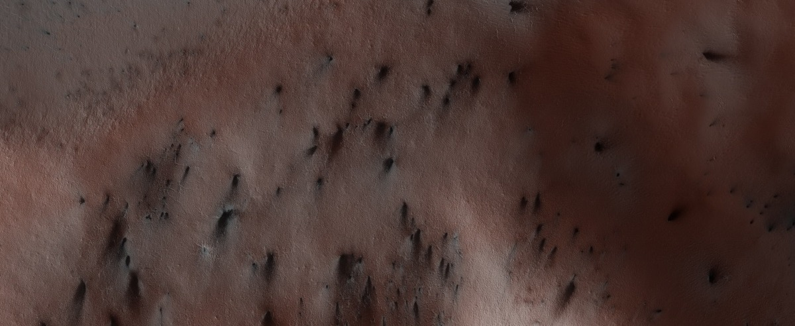
- Fans: directional — angle, length, spread → a wind vector
- Blotches: elliptical — no clear direction
- A season of fans = wind measurements at hundreds of sites
- “More wind data than we’ve ever had on Mars” — a known point in the season (to ~day precision via the imaging sequence), but never the time of day
Wind directions — sharp and repeatable
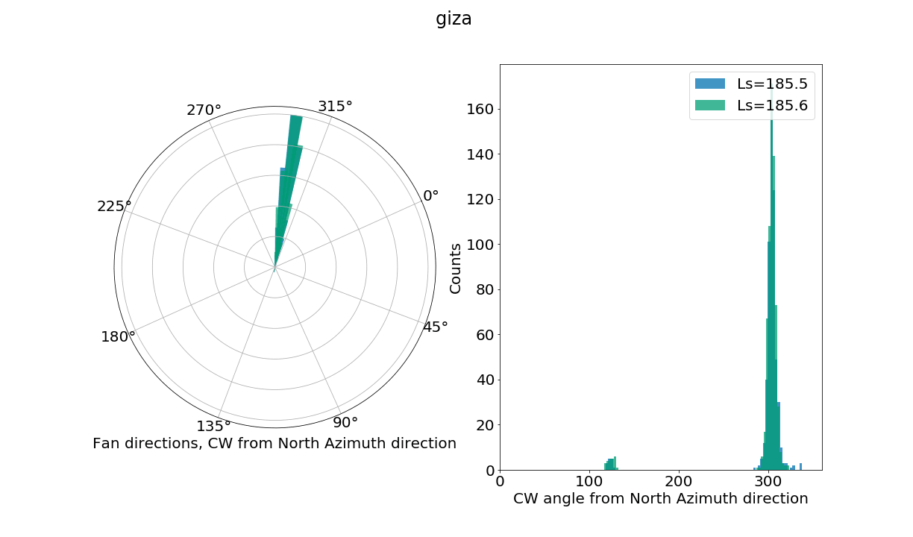
- Each observation’s fan directions form a razor-sharp peak (here ~305°, NW)
- Two observations at the same season coincide — Ls 185.5° vs 185.6° lie on top of each other
- The seasonal rotation is orderly, and consistent across the two Mars Years analysed (MY 29–30) (Aye et al. 2019); reproduced by mesoscale models (Portyankina et al. 2022)
- This is the most direct usable product: direction — while area or count are harder to interpret.
Active regions around the south pole
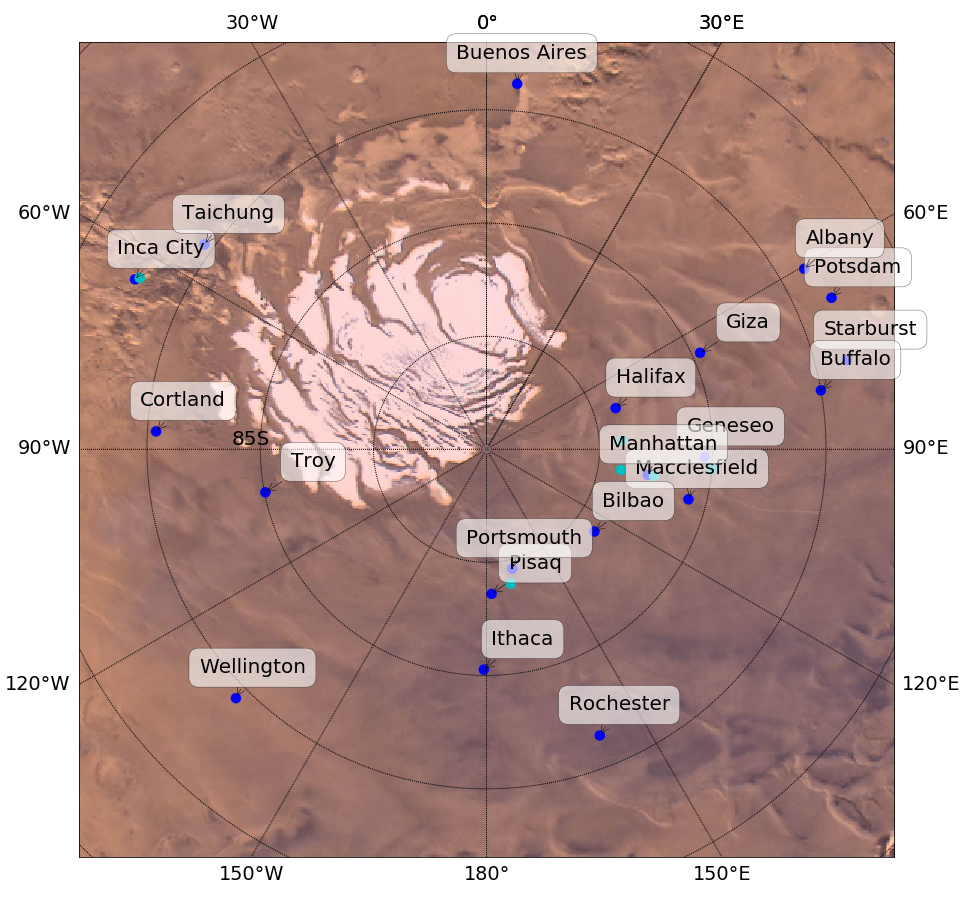
- A HiRISE observation = one multi-filter image at one place and time
- A ROI = a region of interest, re-imaged over years — but at very uneven time sampling
- Seasonal campaigns at ~25 ROIs; enormous HiRISE data volume → the need for citizen science
- Remember this map — the uneven sampling across ROIs and years is the punchline later
From classifications to a catalog

Clockwise from upper-left: raw tile → fan markings → blotch markings → blotch reduction → fan reduction → catalog entry at 50 % majority vote. Full pipeline in Aye et al. (2019).
Experts vs. citizens — the contrast problem
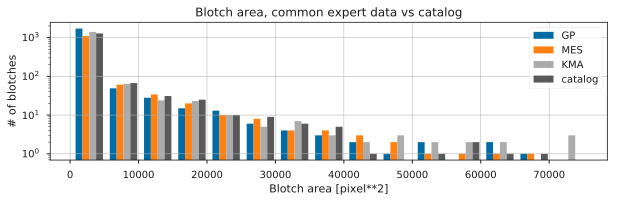
Blotch-area distributions on the same tiles — three science-team experts (GP, MES, KMA) vs the citizen catalog
- Each science-team member (“gold” data) marked several hundred tiles
- Significant disagreement between experts too
- Experience does not overcome the core ambiguity: what contrast defines a feature’s edge?
- Aggregated citizens track the experts — the crowd is not the weak link
What carries error — and what doesn’t: covered area and deposit counts inherit this edge ambiguity, but a fan’s measured wind direction is sharp and reliable.
Results — the v3.1 catalog, open & reachable
- Over 40 000 volunteers contributed; a core of ~10–20 did most of the work
- 64 494 tiles · 469 HiRISE observations · MY 28–33 · ~25 ROIs
- Open release on Zenodo as part of the Planet Four Data Catalog
Two lines of Python via p4tools
III · Surface Coverage
Why surface coverage matters
- Fresh CO2 ice albedo 0.6–0.8; deposited regolith ≲ 0.2
- Coverage directly modulates the seasonal-cap energy balance, sublimation rate, and jet feedback
- Modellers want a number
- The canonical 20–30 % (Piqueux et al. 2003) is within the active cryptic terrain — not a cap-wide mean
- Planet Four lets us replace the folklore number with a measured distribution
How we measure coverage
Per-tile fractional coverage (method by Tom Ihro)
- Each fan/blotch entry → a Shapely polygon in HiRISE pixel coordinates
- Coverage = union area of all polygons ÷ tile area
- Aggregate per observation: median, IQR, std across its tiles
- Per-tile table: 64 494 tiles / 469 obs
- ROI labels via
p4tools.io.get_region_names() - Computed in pixel space (not ground-projected) — small effect at similar latitudes
- 10° Ls bins balance time resolution vs. sample size
Overall coverage statistics
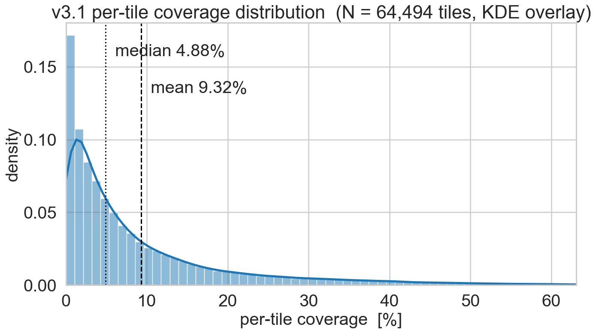
- Cap-wide median 4.88 % · mean 9.32 %
- Heavy right tail past 30 % — but only a small minority of tiles
Inter-annual — the distribution repeats
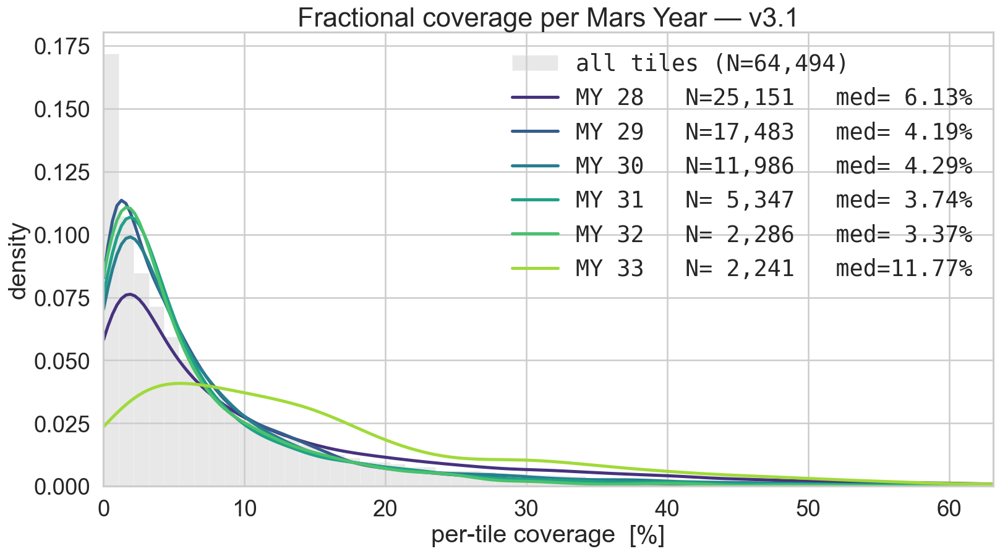
Distribution shape is strikingly repeatable across MY 28–32. So far, so reassuring…
IV · A Cautionary Tale
An apparent trend across Mars Years
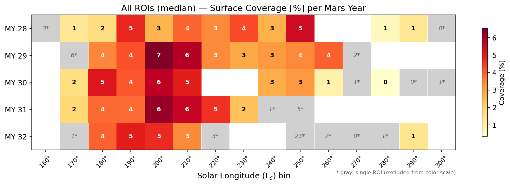
- Aggregate everything: median coverage across all ROIs, per (MY × Ls) bin
- The most recent Mars Year looked different — a tempting “inter-annual trend”
- It is easy to say here: “coverage trends are changing year over year”
The catch — who was actually sampled?
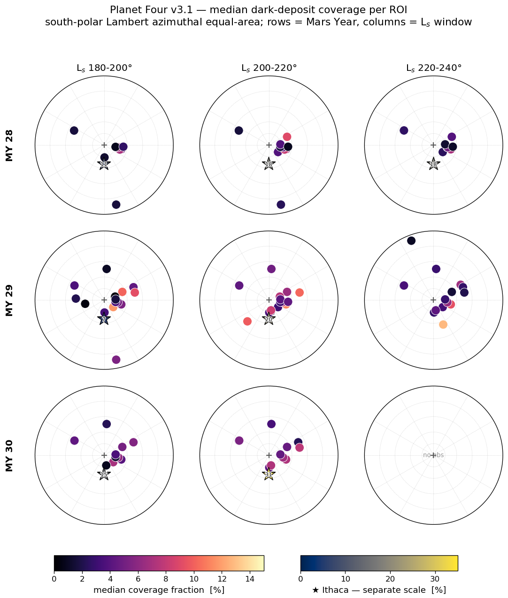
- Each panel is a south-polar map — one dot per ROI, coloured by median coverage
- MY 28–30: richly sampled — 16–25 ROIs each, dots across the whole pole
- This is the regime our intuition is calibrated on…
- …now watch what happens to the sampling in the later Mars Years →
…and then the sampling collapses
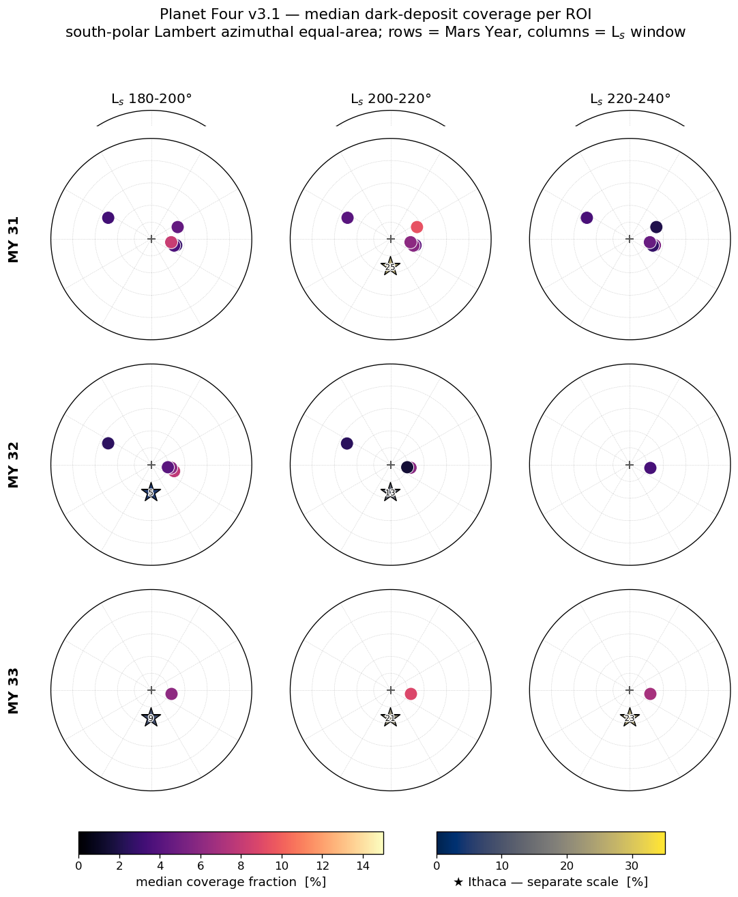
- ROI count falls over the mission: 16 → 25 → 16 → 7 → 6 → 2
- MY 33: almost empty — only 2 ROIs (13 observations), one of them Ithaca, the 10× outlier (★)
- So the MY 33 “all-ROI average” is really “Ithaca and one neighbour” — not comparable to years built from 16–25 regions
- The apparent inter-annual trend was composition, not climate
The fix — read it within each ROI
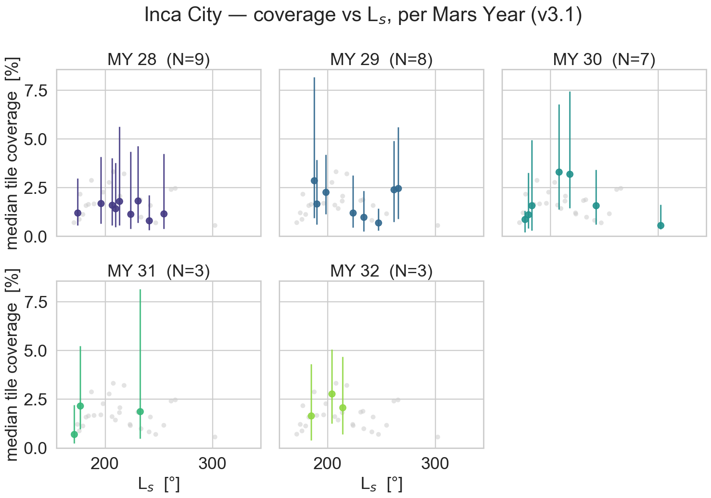
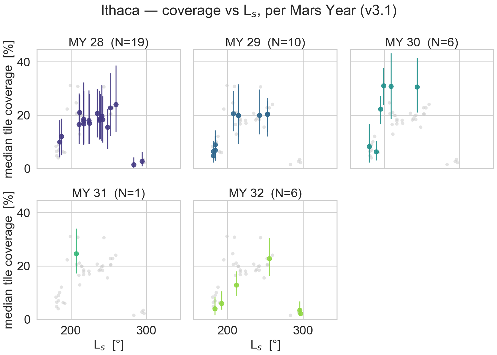
Inca City (low, canonical) vs Ithaca (~10× higher). Compare within a region across years — never pool across regions that differ this much.
Ithaca up close — why it’s the outlier
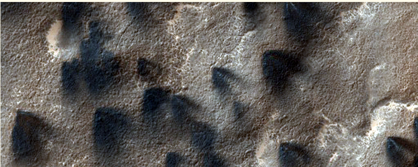
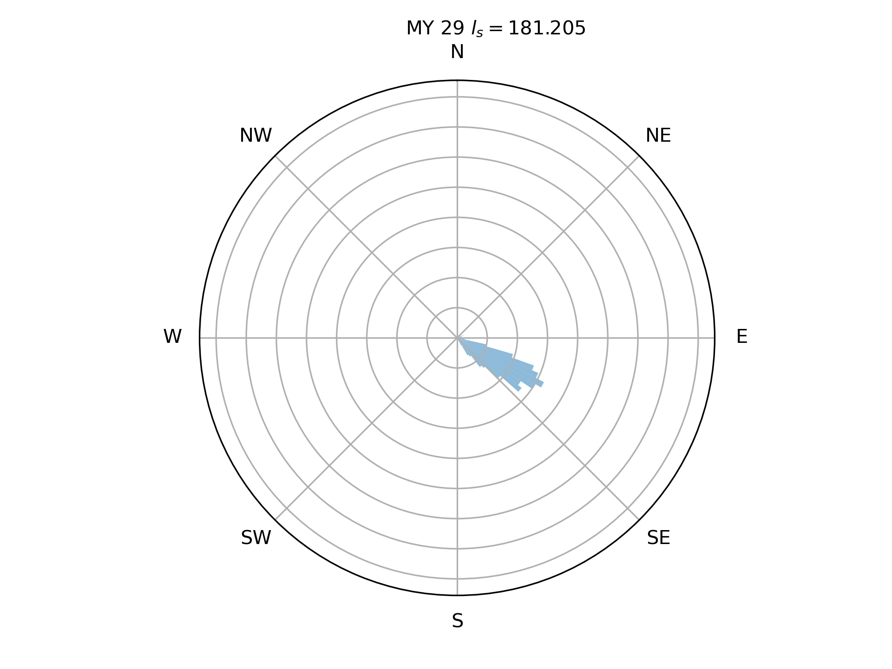
Ithaca’s ice is carpeted with large fans → ~10× a typical ROI’s coverage. Same physics, extreme expression — keep it separate in any cross-ROI aggregate.
A short ROI tour
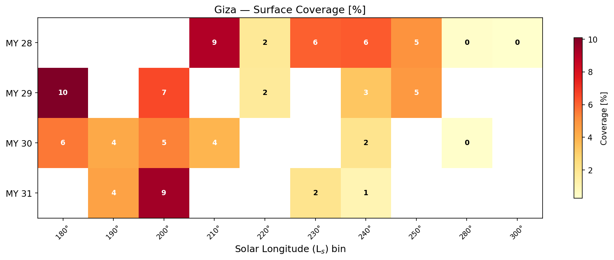
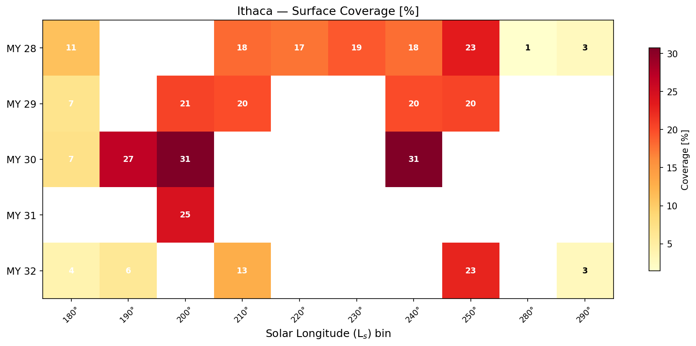
Per-ROI (MY × Ls) heatmaps. Ithaca is the outlier (~10× typical) — it must be treated separately in any cap-wide aggregate.
What we did next: match ROI + Ls — but first, the same ground?
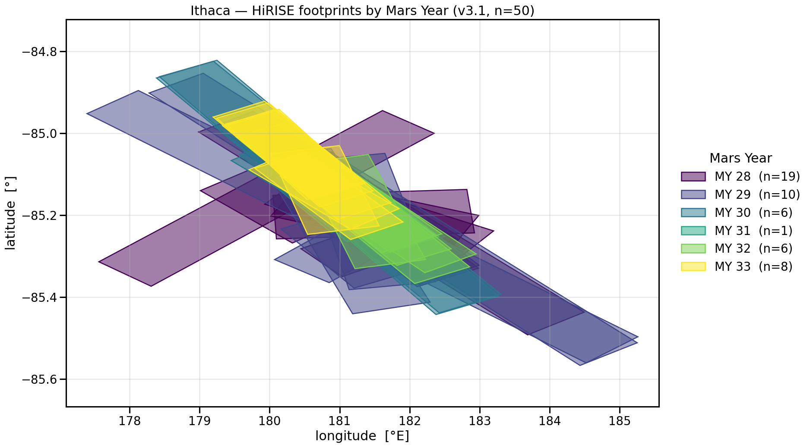
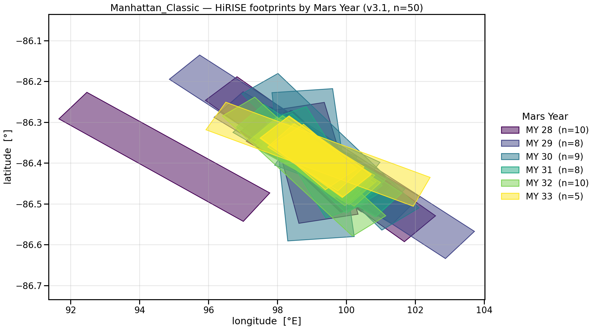
All six Mars Years’ footprints pile onto the same patch — MY 33 (yellow) right in the middle. Comparing years within a ROI compares the same ground, not different terrain.
MY 33 — more eruptions everywhere, calm wind only at Ithaca
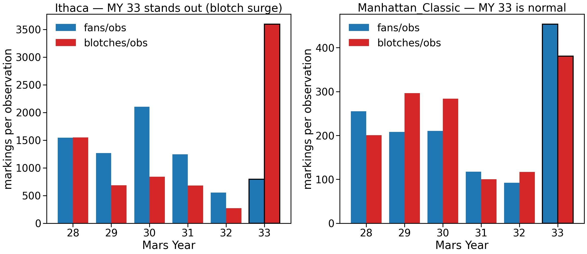
- Restrict to the same two ROIs MY 33 actually sampled, same Ls — compare like with like
- MY 33 activity ≈ ×2 in both ROIs → more eruption events: plausibly a shared / global driver
- But the fan → blotch flip is only at Ithaca → unusually calm local wind, so ejecta drops as blotches, not wind-shaped fans
- A hypothesis to test, not a cap-wide trend — this is the payoff of stratifying properly
MY 31 Manhattan Classic — stronger, more directional wind
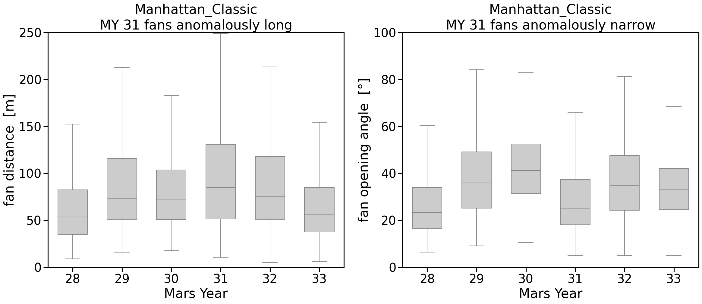
- MY 31 fans ~24 % longer and ~26 % narrower than the MY 28–32 cluster
- That year’s activity sits at the low end → fewer eruptions, each under stronger, more directionally-focused wind
- Another single-(MY × ROI) signal — local, physical, testable
MY 32 Ithaca — a coverage shape-shift (suggestive)
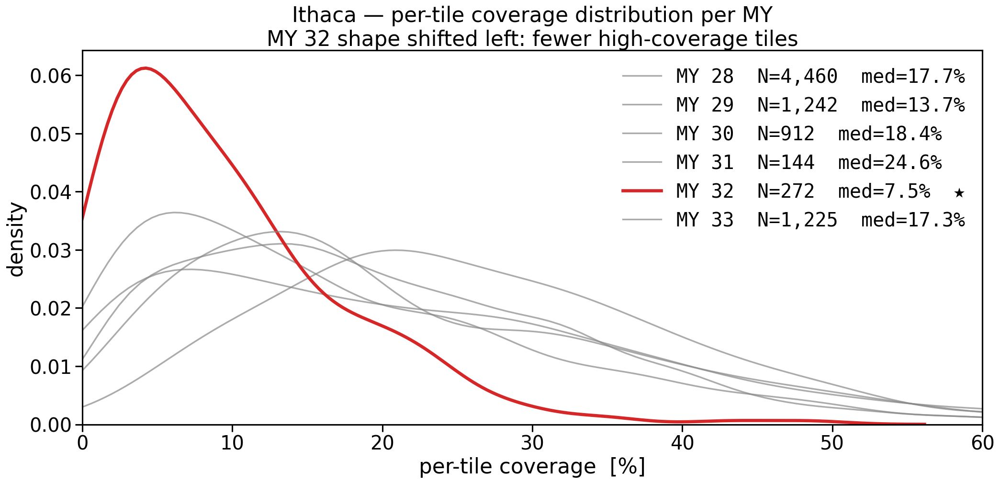
- MY 32’s per-tile coverage piles up at low values — median 7.5 % vs the typical 14–18 %
- Fan geometry stays normal (distance, spread, fan-fraction all typical) → a tile-coverage shape shift, not a fan effect
- Only 3 observations → flagged suggestive: a target for follow-up once more MY 32 Ithaca data arrive
Four signatures, four readings
| MY × ROI | n | Signature | Physical reading |
|---|---|---|---|
| MY 31 Manhattan Classic | 6 | fans ×1.24 longer · ×0.74 narrower · low activity | stronger, more directional wind |
| MY 33 Ithaca | 5 | activity ×2.04 · fan-fraction 0.63 → 0.18 | more eruptions (shared) + calm local wind → blotch surge |
| MY 33 Manhattan Classic | 5 | activity ×2.22 · fan/blotch ratio normal | more eruptions (shared) + normal wind → calm wind is local to Ithaca |
| MY 32 Ithaca | 3 | tile-coverage shifted low | suggestive — needs more observations |
MY 33 across both ROIs: the ×2 activity is shared (a candidate global driver); the fan→blotch flip is local to Ithaca (a local wind anomaly). Every one of these stays hidden until ROI and Ls are matched.
The lesson — heterogeneous datasets
An average over a heterogeneous, unevenly-sampled population is not a measurement — it is an artifact of the sampling.
- Check the n behind every aggregate cell before you read a trend into it
- A change in a pooled statistic can be pure composition change (Simpson’s paradox)
- Stratify first: verify the signal within each stratum, in every stratum
- Only aggregate across strata you have shown to be comparable
V · Where We Go Next
Off-active darkening — a parallel channel
- Beyond discrete fans/blotches, the background CO2 ice darkens diffusely
- Mechanism: a thin homogeneous dust mantle from lighter grains carried by wider jet activity (Pommerol et al. 2011)
- Photometric quantification (north cap) by (Portyankina et al. 2013); recent N–S synthesis (Hansen et al. 2024)
- Planet Four does not capture this — it is a parallel contribution to the seasonal albedo budget
Conclusions
- Two-tier reliability: wind directions are sharp & reliable; coverage area and deposit counts carry real uncertainty
- v3.1 catalog is openly redistributable (Zenodo +
p4tools) - Cap-wide coverage: median 4.88 %, heavy right tail — not the folklore 20–30 %
- Within-ROI distributions repeat across MY 28–33
- Beware the all-ROI average — uneven ROI sampling fakes inter-annual trends
- Combine with off-active darkening for a complete albedo budget
- Now training an AI on P4 labels to extend coverage from the colour strip to the 5× larger RED channel
One last thing — for the students
- Mistakes are the essence of progress — every scientific advance is built on them
- We just dress them up: “insufficiencies,” “a hole in the inference logic,” “limitations of prior work” — masking words for the very same thing
- Strip the disguise and it is always a mistake, small or large, that brought us forward — this talk is proof: our MY 33 “trend” was wrong, and being wrong opened the real science
- So don’t be afraid of them. Run into them with open arms, screaming. A mistake will always teach you where to go next.
References
K.-Michael Aye · Planet Four · Planetary Seminar FU Berlin · 2026-06-04